Revision
The whole book on one page
Every chapter's TL;DR in one place. Skim it the night before an interview, or print it (⌘P). Click a chapter title to open the full walkthrough.
Chapter 1Scale from Zero to Millions of Users
- Scaling is iterative: each stage fixes today's bottleneck and exposes the next one.
- Split tiers, then scale out: separate the web and data tiers, then add web servers behind a load balancer (public IP outside, private IPs inside).
- Stateless web tier: keep session data in a shared store (NoSQL), so any server can serve any request and the tier can autoscale.
- Replicate the database: writes go to the master, reads to the slaves. If the master dies, promote a slave.
- Cache + CDN: keep hot, rarely-changing data in memory (set expiry, plan for consistency, avoid a single point of failure, evict LRU). Serve static files from a CDN with TTLs.
- Multiple data centers: geoDNS sends users to the nearest one. You must solve traffic redirection, data sync and deployment.
- Message queues decouple slow work so producers and consumers scale independently. Add logging, metrics and automation.
- Shard the data tier by a key that spreads data evenly (e.g.
user_id % 4). Expect resharding, celebrity hotspots and cross-shard joins (fix: denormalize).
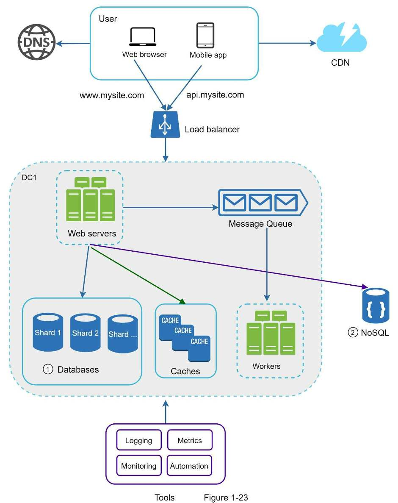
Chapter 2Back-of-the-Envelope Estimation
- Goal: quick estimates from thought experiments and common performance numbers that show which designs meet the requirements. The process is graded, not precision.
- Powers of two: 210 ≈ thousand (KB), 220 ≈ million (MB), 230 ≈ billion (GB), 240 ≈ trillion (TB), 250 ≈ quadrillion (PB). 1 ASCII character = 1 byte = 8 bits.
- Latency lessons: memory is fast, disk is slow: avoid disk seeks. Compression is cheap: compress before sending over the internet. Cross-region trips are slow.
- Availability: each extra nine cuts downtime 10×: 99.9% ≈ 8.77 h/year, 99.99% ≈ 52.6 min/year. Big cloud SLAs are ≥ 99.9%.
- QPS = DAU × actions per day ÷ 86,400 s (≈ 105). Peak QPS ≈ 2 × QPS.
- Storage = items per day × size × 365 × years.
- Twitter example: 150 M DAU × 2 tweets → ~3,500 QPS, ~7,000 peak. 10% carry 1 MB media → 30 TB/day → ~55 PB over 5 years.
- Tips: round aggressively, write assumptions down, label every unit.
100 nsmain memory reference
0.5 msround trip inside one datacenter
10 msdisk seek
150 msCalifornia ↔ Netherlands round trip
Chapter 3A Framework for System Design Interviews
- What it simulates: two co-workers solving an ambiguous problem together. There's no perfect answer; the process counts more than the final design.
- What's scored: design skill, collaboration, working under pressure, resolving ambiguity, and asking good questions.
- Red flags: over-engineering (design purity over trade-offs), narrow-mindedness, stubbornness.
- Step 1 · Scope: don't jump to a solution. Ask about features, users, growth and tech stack; write assumptions down.
- Step 2 · High-level design: box diagram, back-of-the-envelope check, a few use cases, and the interviewer's agreement.
- Step 3 · Deep dive: prioritize components with the interviewer; skip details that don't show you can design a scalable system.
- Step 4 · Wrap up: bottlenecks and improvements, recap, error cases, operations, the next scale curve.
- Throughout: think out loud, offer multiple approaches, ask for hints when stuck. You're done only when the interviewer says so.
3–10 minStep 1 · Understand the problem, set scope
10–15 minStep 2 · High-level design & buy-in
10–25 minStep 3 · Design deep dive
3–5 minStep 4 · Wrap up
Chapter 4Design a Rate Limiter
- What: cap the requests a client (user, IP, device…) sends per time period; reject the excess with HTTP 429 Too Many Requests. Prevents DoS, cuts cost, stops overload.
- Scope: server-side, distributed, flexible rules, low latency, little memory, fault tolerant, and it tells throttled users.
- Where: not the client (requests can be forged). Put it in the API servers or in middleware / an API gateway.
- Five algorithms: token bucket (allows bursts; Amazon, Stripe), leaking bucket (FIFO queue, fixed outflow; Shopify), fixed window counter (up to 2× at window edges), sliding window log (exact, memory-hungry), sliding window counter (current + previous × overlap; cheap approximation).
- Counters live in Redis (in-memory, with expiry):
INCR+EXPIRE. Rules live in config files, cached by workers. - Headers:
X-Ratelimit-Remaining,-Limit,-Retry-After. Throttled requests are dropped or queued. - Distributed: race conditions → Lua script or Redis sorted sets (not locks). Many limiters → one central Redis (not sticky sessions).
- Extras: edge data centers, eventual consistency, monitoring, hard vs soft limits, layer-3 limiting (iptables), client best practices.
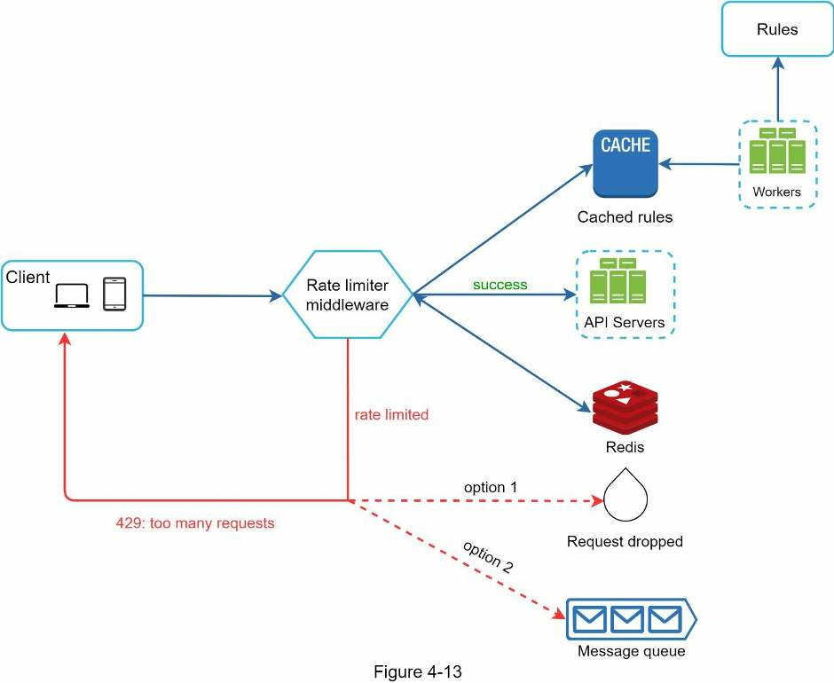
Chapter 5Design Consistent Hashing
- Problem: with
serverIndex = hash(key) % N, adding or removing one server remaps most keys, causing a storm of cache misses. - Consistent hashing: on a resize only k/n keys move on average (k keys, n slots), not nearly all.
- Hash ring: the hash space (SHA-1: 0 to 2160 − 1) with its ends joined. Servers (by IP or name) and keys are hashed onto it with the same function, no modulo.
- Lookup: from the key, go clockwise to the first server.
- Add/remove a server: only keys between that node and the previous server (anticlockwise) move.
- Basic ring's two flaws: unequal partitions, and keys piling up on one server.
- Fix: virtual nodes, many ring points per server. 100 per server → standard deviation ≈ 10% of the mean; 200 → ≈ 5%. Cost: more metadata.
- Used by: Dynamo, Cassandra, Discord, Akamai CDN, Maglev.
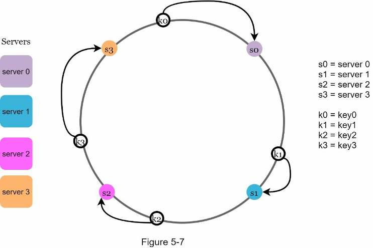
Chapter 6Design a Key-Value Store
- Goal:
put(key, value)andget(key)for small pairs (< 10 KB) at big-data scale, with high availability, automatic scaling, tunable consistency and low latency. - One server (an in-memory hash table) fills up fast, so the store must be distributed.
- CAP: network partitions are unavoidable, so choose CP (block writes, like a bank) or AP (keep serving, maybe stale). This design is AP with eventual consistency, like Dynamo and Cassandra.
- Partition with consistent hashing (virtual nodes). Replicate each key on the next N distinct servers clockwise, spread across data centers.
- Quorum: a write waits for W acks, a read for R replies. W + R > N ⇒ strong consistency (usually N = 3, W = R = 2).
- Vector clocks (
[server, counter]pairs) detect conflicting versions; the client reconciles them. - Failures: gossip detects them; sloppy quorum + hinted handoff ride out temporary ones; Merkle-tree anti-entropy repairs permanent ones; cross-data-center replication survives outages.
- Per node (Cassandra-style): write = commit log → memory cache → flush to SSTables. Read = memory cache → bloom filter → SSTables.
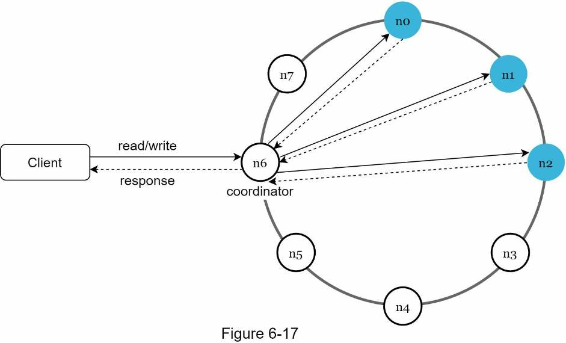
Chapter 7Design a Unique ID Generator in Distributed Systems
- Problem: generate IDs that are unique, numeric, 64-bit, ordered by time, at 10,000+ IDs/sec across many servers. A single database's
auto_incrementcan't keep up, and coordinating it across databases is slow. - Four options: multi-master replication (step by k), UUID (128-bit random), ticket server (one central counter), Twitter Snowflake (split the 64 bits into fields).
- Winner: Snowflake.
1 sign | 41 timestamp | 5 datacenter | 5 machine | 12 sequence. - Timestamp sits in the high bits, so IDs sort by time. 41 bits of milliseconds ≈ 69 years from a custom epoch.
- 12-bit sequence = 4,096 IDs per millisecond per machine; it resets to 0 every millisecond.
- Datacenter and machine IDs are fixed at startup. Changing them by accident can cause ID collisions.
- Wrap-up talking points: clock synchronization (NTP), tuning section lengths, high availability.
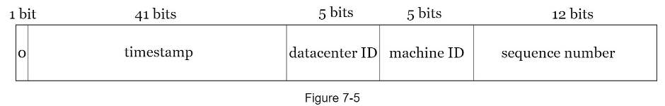
Chapter 8Design a URL Shortener
- Scale: 100 million new URLs/day → ~1,160 writes/s, 11,600 reads/s (10:1), 365 billion records in 10 years (~36.5 TB at 100 bytes each).
- APIs:
POST api/v1/data/shorten {longUrl}→ short URL;GET api/v1/shortUrl→ redirect. - 301 vs 302: 301 is permanent and cached by the browser (less load); 302 sends every click through you (better analytics).
- Storage: relational table
(id, shortURL, longURL); an in-memory hash table is too expensive. - Length: 62 characters
[0-9a-zA-Z]; 627 ≈ 3.5 trillion ≥ 365 billion → 7 characters. - Making the code: hash (CRC32/MD5/SHA-1), keep 7 characters and resolve collisions, or base-62 encode a unique ID. Base 62 wins: no collisions, but length grows with the ID and codes are guessable.
- Shorten: long URL already stored? Return its code. Else new ID → base 62 → save.
- Redirect: load balancer → web server → cache → database.
- Wrap-up: rate limiter, web/DB scaling, analytics, availability.
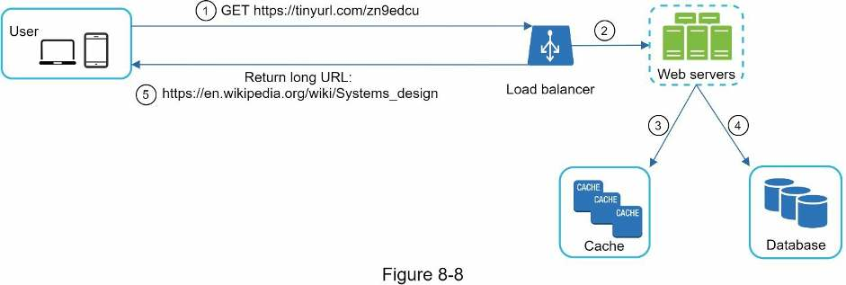
Chapter 9Design a Web Crawler
- Scope: crawl for search engine indexing, 1 billion HTML pages/month, include new and edited pages, store pages for 5 years, ignore duplicate content.
- Numbers: ~400 pages/s (800 peak) · 500 KB per page → 500 TB/month → 30 PB over 5 years.
- A good crawler is scalable, robust, polite and extensible.
- The loop: seed URLs → URL frontier → HTML downloader (+ DNS resolver) → content parser → “content seen?” → URL extractor → URL filter → “URL seen?” → frontier.
- Dedupe twice: compare page hashes (~29% of pages are duplicates); track known URLs with a Bloom filter or hash table.
- BFS, not DFS (DFS goes too deep). A plain FIFO floods one host and ignores importance, so the URL frontier uses front queues for priority and back queues (one host per queue, one worker per queue) for politeness.
- Downloader: obey cached robots.txt; go faster with distributed crawl, a DNS cache, locality and short timeouts.
- Stay safe: consistent hashing, saved crawl state, a max URL length against spider traps, and filtering out noise.
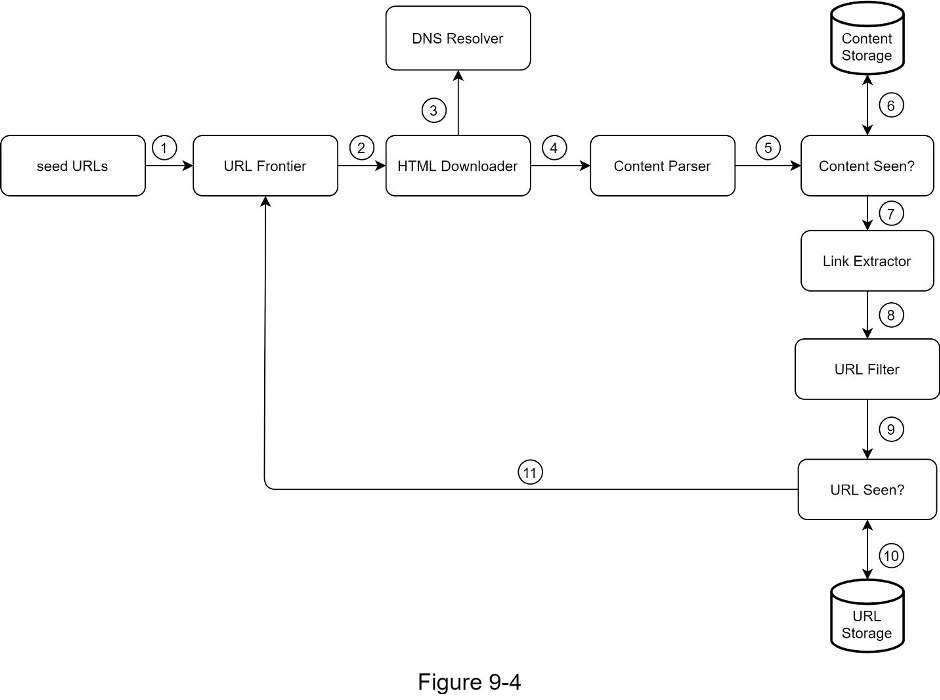
Chapter 10Design a Notification System
- Scope: push (iOS, Android), SMS and email. Soft real-time, opt-out supported, 10M push + 1M SMS + 5M email per day.
- Third parties deliver: iOS → APNs, Android → FCM, SMS → Twilio/Nexmo, email → Sendgrid/Mailchimp. Collect device tokens, phone numbers and emails at install or sign-up.
- Flow: services → notification servers (auth, rate limit, validate, read user/device/settings from cache/DB) → one message queue per channel → workers → third party → device.
- Queues decouple components and absorb spikes. One queue per channel means one provider's outage doesn't block the other channels.
- Never lose a notification: persist it in a notification log; on failure, put it back on the queue to retry, and alert developers if failures persist.
- Exactly-once delivery is impossible. Reduce duplicates by deduping on event ID.
- Also: templates, per-channel opt-in settings, per-user rate limiting, appKey/appSecret, queue-depth monitoring, event tracking.
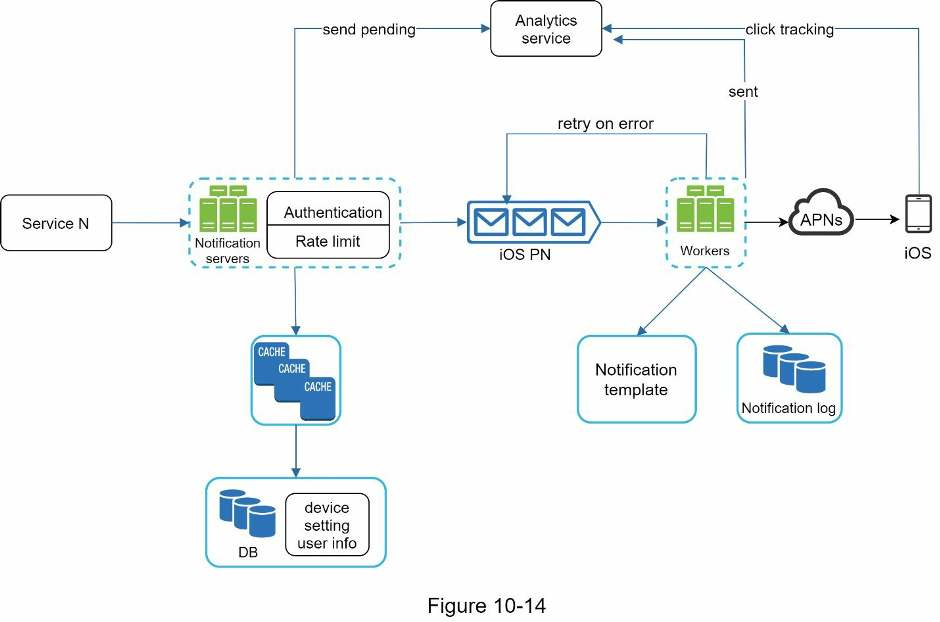
Chapter 11Design a News Feed System
- Scope: web + mobile; publish posts and see friends' posts, reverse chronological; up to 5,000 friends; 10M DAU; posts can include images and videos.
- APIs:
POST /v1/me/feed(content,auth_token) publishes;GET /v1/me/feed(auth_token) retrieves. - Publish: web servers (auth + rate limit) → post service (post DB + cache), fanout service (into friends' feed caches), notification service.
- Fanout on write (push): fast reads, but slow for users with many friends (hotkey problem) and wasted on inactive users. Fanout on read (pull): no waste, no hotkey, but slow reads.
- Hybrid: push for most users; for celebrities, followers pull on demand. Consistent hashing spreads hotkeys.
- Fanout steps: friend IDs from a graph DB → filter by settings via user cache → message queue → fanout workers → feed cache stores only
<post_id, user_id>, capped. - Retrieve: post IDs from the feed cache, hydrate from user and post caches, return JSON. Media comes from a CDN.
- Cache layers: news feed, content, social graph, action, counters.
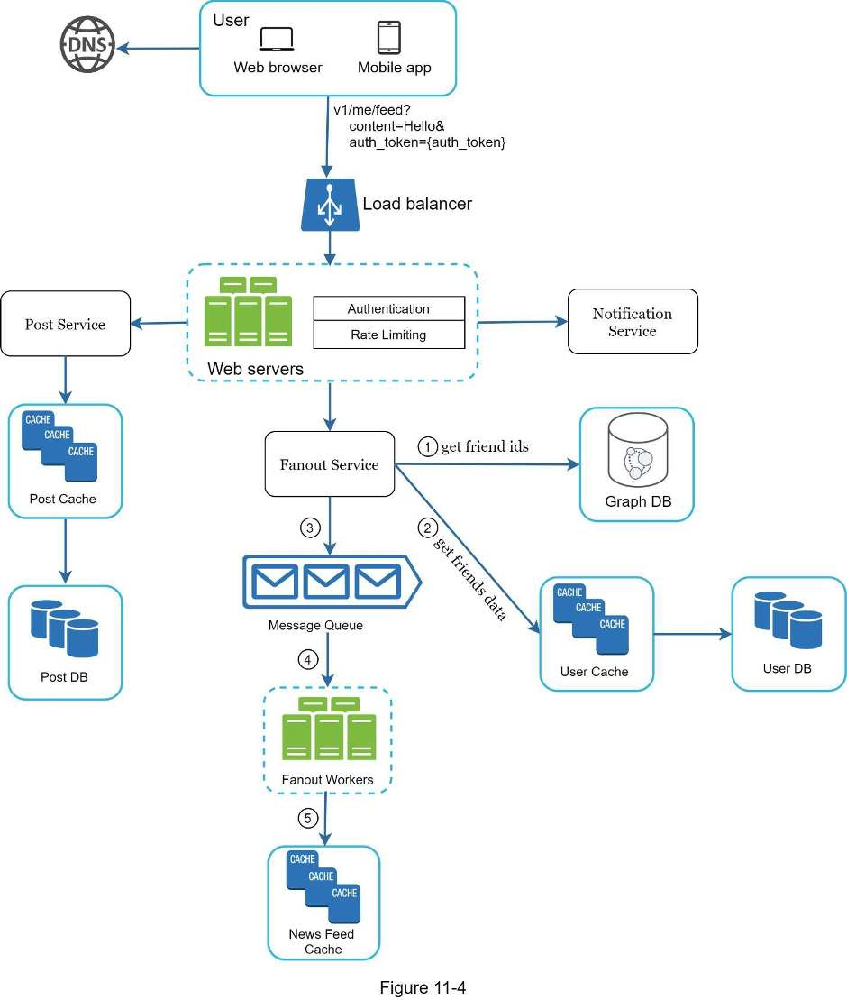
Chapter 12Design a Chat System
- Scope: 1-on-1 and small group chat (max 100), online presence, multi-device, push notifications. Text only (< 100,000 chars), 50M DAU, history kept forever.
- WebSocket for sending and receiving: a persistent, bidirectional connection upgraded from HTTP. Polling wastes requests; long polling breaks with stateless servers. Login and profiles use HTTP.
- Components: stateless API servers behind a load balancer, stateful chat servers, presence servers, notification servers, a key-value store.
- Storage: profiles in a relational DB; chat history (huge, recent-heavy, 1:1 read/write) in a KV store (Facebook: HBase, Discord: Cassandra). Order by
message_id, notcreated_at. - Service discovery (Zookeeper) picks the best chat server for each client at login.
- 1-on-1 flow: chat server → ID generator → sync queue → KV store → recipient's chat server, or push notification if offline. Devices sync via their own
cur_max_message_id. - Small groups: copy each message into every member's sync queue (inbox); WeChat caps groups at 500.
- Presence: heartbeats (every 5 s, 30 s timeout) prevent flicker. Status fans out via a pub-sub channel per friend pair.
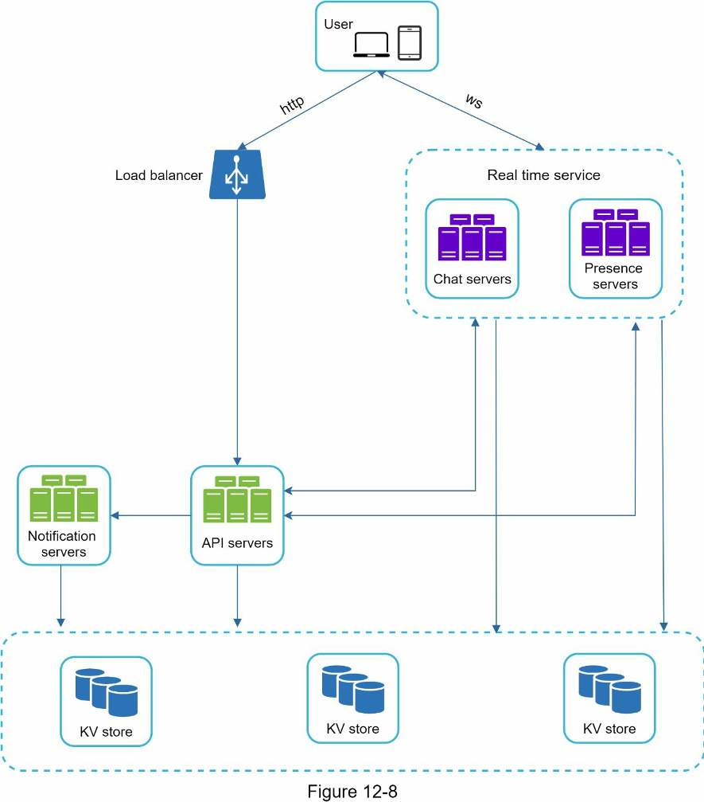
Chapter 13Design a Search Autocomplete System
- Problem: return the top 5 most-searched past queries that start with the typed prefix ("top k"). English, lowercase, no spell check, 10M DAU.
- Requirements: respond in under 100 ms, relevant, sorted by popularity, scalable, highly available.
- Numbers: one request per keystroke (~20 per search) → ~24,000 QPS, ~48,000 peak; 0.4 GB of new data per day.
- Naive version: a frequency table plus
LIKE 'prefix%' ORDER BY frequency DESC LIMIT 5. The database becomes the bottleneck. - Core: a trie with prefix length capped (~50) and the top 5 queries cached at every node. Lookup drops from O(p + c + c log c) to O(1): space traded for time.
- Build offline, weekly: analytics logs → aggregators → aggregated data → workers → Trie DB → Trie Cache.
- Serve: load balancer → API servers → Trie Cache (miss → Trie DB), plus AJAX, browser caching and log sampling.
- Operate: rebuild weekly and swap; hide bad suggestions with a filter layer. Shard by prefix via a shard map manager, since first-letter sharding is uneven.
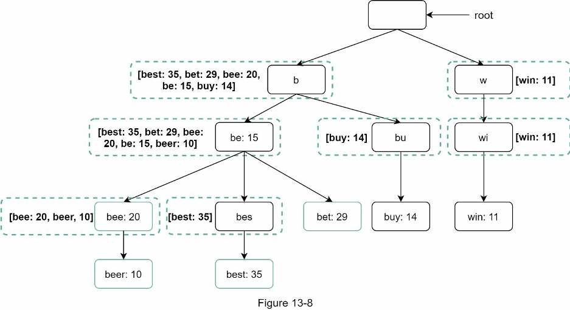
Chapter 14Design YouTube
- Scope: upload and watch videos on mobile, web and smart TV. 5M DAU, 30 min/day, many international users, videos up to 1 GB, encryption, cloud services allowed.
- Numbers: 5M × 10% × 300 MB = 150 TB of new video per day. CDN: 5M × 5 videos × 0.3 GB × $0.02 = $150,000 per day.
- Rent, don't build blob storage and the CDN. Clients stream from the nearest CDN edge; everything else goes through API servers.
- Upload = two parallel flows. Video: original storage → transcoding servers → transcoded storage → CDN, while a completion queue + handler update the metadata DB and cache. Metadata: client → API servers → DB and cache.
- Transcoding runs as a DAG of tasks: preprocessor → DAG scheduler → resource manager → task workers → encoded video.
- Optimize: GOP-chunked parallel uploads, upload centers near users, message queues between stages (speed); pre-signed URLs and DRM/AES/watermarks (safety); only popular videos on the CDN (cost).
- Errors: retry recoverable ones; stop and return an error code otherwise.

Chapter 15Design Google Drive
- Scope: upload, download, cross-device sync, revisions, sharing, notifications. Web + mobile, any file type, files ≤ 10 GB, encrypted at rest, 10M DAU.
- Numbers: 50M users × 10 GB = 500 PB allocated. 2 uploads per user per day → ~240 upload QPS, 480 at peak.
- Two paths: metadata goes load balancer → API servers → metadata DB and cache. File content goes through block servers to cloud storage (S3, replicated across regions), with cold storage for inactive files.
- Block servers split files into blocks of up to 4 MB, compress and encrypt each one, and use delta sync to upload only the blocks that changed.
- Strong consistency: a relational DB (native ACID), plus cache invalidation on every DB write.
- Conflicts: first version processed wins; the other user gets both copies to merge or override.
- Notifications use long polling (one-way, infrequent). An offline backup queue holds changes for offline clients.
- Save space: dedup blocks by hash, cap and thin out versions, move cold data to S3 Glacier.
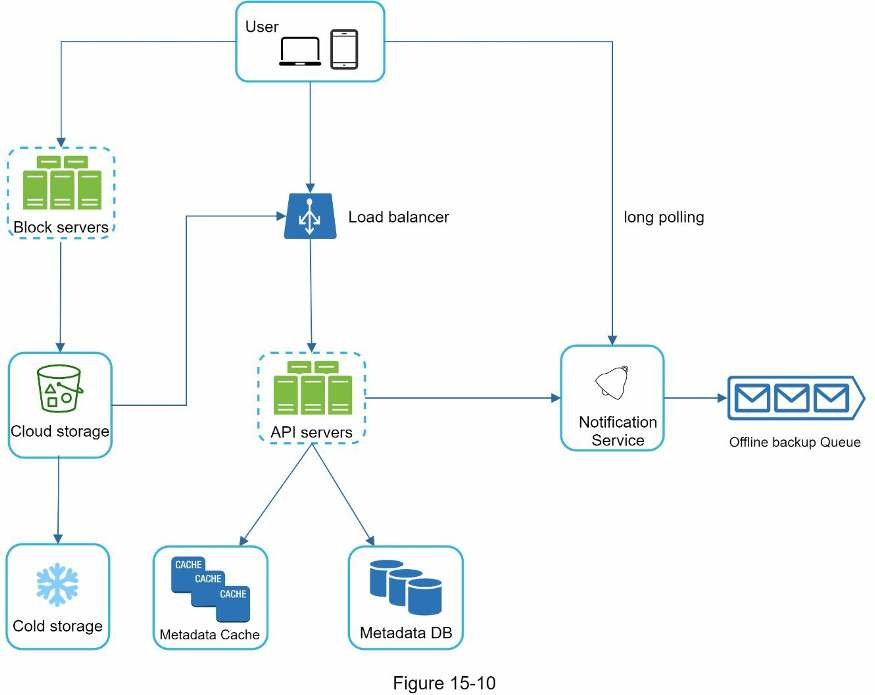
Chapter 16The Learning Continues
- Good design sense takes years to build. The shortcut is studying real-world architectures.
- While reading, notice both the shared principles (caching, replication, sharding, queues, denormalization) and the underlying technologies. For each technology, ask what problem does it solve?
- Interviewing with a company? Read its engineering blog first, so you know the systems and technologies it uses.
- Must-reads that map straight onto this book: Dynamo (Ch 6), Snowflake (Ch 7), Timelines at Scale (Ch 11), Facebook Chat / WhatsApp (Ch 12), Haystack (Ch 14), Google File System and Dropbox (Ch 15).
- Practice makes perfect: re-run the flashcards and the final review until the answers come without thinking.